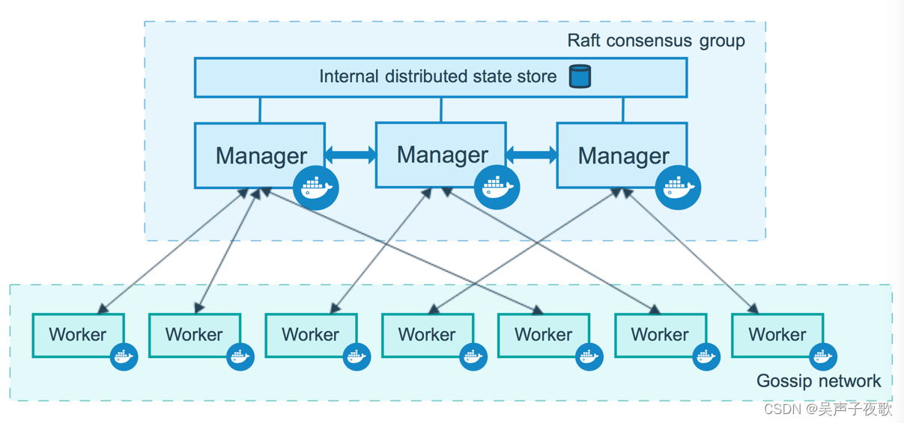
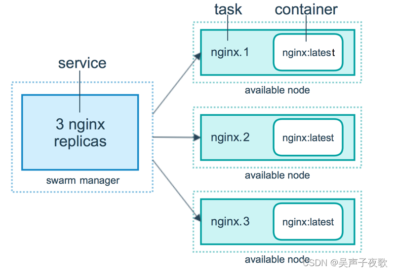
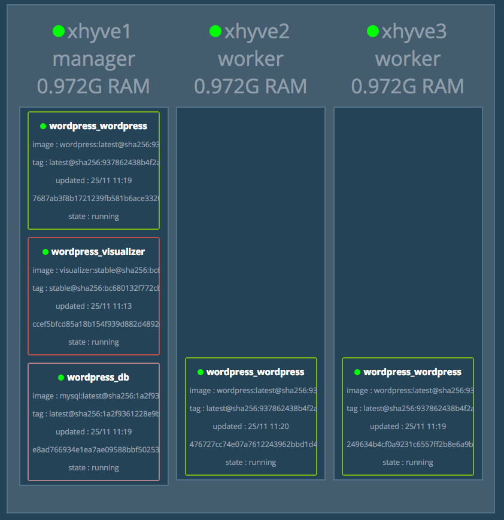

Docker 1.12 Swarm mode 已经内嵌入 Docker 引擎，成为了 docker 子命令 docker swarm。请注意与旧的 Docker Swarm 区分开来。
Swarm mode 内置 kv 存储功能，提供了众多的新特性，比如：具有容错能力的去中心化设计、内置服务发现、负载均衡、路由网格、动态伸缩、滚动更新、安全传输等。使得 Docker 原生的 Swarm 集群具备与 Mesos、Kubernetes 竞争的实力。
Swarm 是使用 SwarmKit 构建的 Docker 引擎内置（原生）的集群管理和编排工具。
使用 Swarm 集群之前需要了解以下几个概念。
运行 Docker 的主机可以主动初始化一个 Swarm 集群或者加入一个已存在的 Swarm 集群，这样这个运行 Docker 的主机就成为一个 Swarm 集群的节点 (node) 。
节点分为管理 (manager) 节点和工作 (worker) 节点。
管理节点用于 Swarm 集群的管理，docker swarm 命令基本只能在管理节点执行（节点退出集群命令 docker swarm leave 可以在工作节点执行）。一个 Swarm 集群可以有多个管理节点，但只有一个管理节点可以成为 leader，leader 通过 raft 协议实现。
工作节点是任务执行节点，管理节点将服务 (service) 下发至工作节点执行。管理节点默认也作为工作节点。你也可以通过配置让服务只运行在管理节点。
来自 Docker 官网的这张图片形象的展示了集群中管理节点与工作节点的关系。

任务 （Task）是 Swarm 中的最小的调度单位，目前来说就是一个单一的容器。
服务 （Services） 是指一组任务的集合，服务定义了任务的属性。服务有两种模式：
replicated services 按照一定规则在各个工作节点上运行指定个数的任务。
global services 每个工作节点上运行一个任务
两种模式通过 docker service create 的 --mode 参数指定。
来自 Docker 官网的这张图片形象的展示了容器、任务、服务的关系。

阅读 基本概念 一节我们知道 Swarm 集群由 管理节点 和 工作节点 组成。本节我们来创建一个包含一个管理节点和两个工作节点的最小 Swarm 集群。
在已经安装好 Docker 的主机上执行如下命令：
$ docker swarm init --advertise-addr 192.168.99.100
Swarm initialized: current node (dxn1zf6l61qsb1josjja83ngz) is now a manager.
To add a worker to this swarm, run the following command:
docker swarm join \
--token SWMTKN-1-49nj1cmql0jkz5s954yi3oex3nedyz0fb0xx14ie39trti4wxv-8vxv8rssmk743ojnwacrr2e7c \
192.168.99.100:2377
To add a manager to this swarm, run 'docker swarm join-token manager' and follow the instructions.如果你的 Docker 主机有多个网卡，拥有多个 IP，必须使用 --advertise-addr 指定 IP。
执行
docker swarm init命令的节点自动成为管理节点。
上一步我们初始化了一个 Swarm 集群，拥有了一个管理节点，下面我们继续在两个 Docker 主机中分别执行如下命令，创建工作节点并加入到集群中。
$ docker swarm join \
--token SWMTKN-1-49nj1cmql0jkz5s954yi3oex3nedyz0fb0xx14ie39trti4wxv-8vxv8rssmk743ojnwacrr2e7c \
192.168.99.100:2377
This node joined a swarm as a worker.经过上边的两步，我们已经拥有了一个最小的 Swarm 集群，包含一个管理节点和两个工作节点。
在管理节点使用 docker node ls 查看集群。
$ docker node ls
ID HOSTNAME STATUS AVAILABILITY MANAGER STATUS
03g1y59jwfg7cf99w4lt0f662 worker2 Ready Active
9j68exjopxe7wfl6yuxml7a7j worker1 Ready Active
dxn1zf6l61qsb1josjja83ngz * manager Ready Active Leader我们使用 docker service 命令来管理 Swarm 集群中的服务，该命令只能在管理节点运行。
现在我们在上一节创建的 Swarm 集群中运行一个名为 nginx 服务。
$ docker service create --replicas 3 -p 80:80 --name nginx nginx:1.13.7-alpine现在我们使用浏览器，输入任意节点 IP ，即可看到 nginx 默认页面。
使用 docker service ls 来查看当前 Swarm 集群运行的服务。
$ docker service ls
ID NAME MODE REPLICAS IMAGE PORTS
kc57xffvhul5 nginx replicated 3/3 nginx:1.13.7-alpine *:80->80/tcp使用 docker service ps 来查看某个服务的详情。
$ docker service ps nginx
ID NAME IMAGE NODE DESIRED STATE CURRENT STATE ERROR PORTS
pjfzd39buzlt nginx.1 nginx:1.13.7-alpine swarm2 Running Running about a minute ago
hy9eeivdxlaa nginx.2 nginx:1.13.7-alpine swarm1 Running Running about a minute ago
36wmpiv7gmfo nginx.3 nginx:1.13.7-alpine swarm3 Running Running about a minute ago使用 docker service logs 来查看某个服务的日志。
$ docker service logs nginx
nginx.3.36wmpiv7gmfo@swarm3 | 10.255.0.4 - - [25/Nov/2017:02:10:30 +0000] "GET / HTTP/1.1" 200 612 "-" "Mozilla/5.0 (Macintosh; Intel Mac OS X 10.13; rv:58.0) Gecko/20100101 Firefox/58.0" "-"
nginx.3.36wmpiv7gmfo@swarm3 | 10.255.0.4 - - [25/Nov/2017:02:10:30 +0000] "GET /favicon.ico HTTP/1.1" 404 169 "-" "Mozilla/5.0 (Macintosh; Intel Mac OS X 10.13; rv:58.0) Gecko/20100101 Firefox/58.0" "-"
nginx.3.36wmpiv7gmfo@swarm3 | 2017/11/25 02:10:30 [error] 5#5: *1 open() "/usr/share/nginx/html/favicon.ico" failed (2: No such file or directory), client: 10.255.0.4, server: localhost, request: "GET /favicon.ico HTTP/1.1", host: "192.168.99.102"
nginx.1.pjfzd39buzlt@swarm2 | 10.255.0.2 - - [25/Nov/2017:02:10:26 +0000] "GET / HTTP/1.1" 200 612 "-" "Mozilla/5.0 (Macintosh; Intel Mac OS X 10.13; rv:58.0) Gecko/20100101 Firefox/58.0" "-"
nginx.1.pjfzd39buzlt@swarm2 | 10.255.0.2 - - [25/Nov/2017:02:10:27 +0000] "GET /favicon.ico HTTP/1.1" 404 169 "-" "Mozilla/5.0 (Macintosh; Intel Mac OS X 10.13; rv:58.0) Gecko/20100101 Firefox/58.0" "-"
nginx.1.pjfzd39buzlt@swarm2 | 2017/11/25 02:10:27 [error] 5#5: *1 open() "/usr/share/nginx/html/favicon.ico" failed (2: No such file or directory), client: 10.255.0.2, server: localhost, request: "GET /favicon.ico HTTP/1.1", host: "192.168.99.101"我们可以使用 docker service scale 对一个服务运行的容器数量进行伸缩。
当业务处于高峰期时，我们需要扩展服务运行的容器数量。
$ docker service scale nginx=5当业务平稳时，我们需要减少服务运行的容器数量。
$ docker service scale nginx=2使用 docker service rm 来从 Swarm 集群移除某个服务。
$ docker service rm nginx正如之前使用 docker-compose.yml 来一次配置、启动多个容器，在 Swarm 集群中也可以使用 compose 文件 （docker-compose.yml） 来配置、启动多个服务。
上一节中，我们使用 docker service create 一次只能部署一个服务，使用 docker-compose.yml 我们可以一次启动多个关联的服务。
我们以在 Swarm 集群中部署 WordPress 为例进行说明。
version: "3"
services:
wordpress:
image: wordpress
ports:
- 80:80
networks:
- overlay
environment:
WORDPRESS_DB_HOST: db:3306
WORDPRESS_DB_USER: wordpress
WORDPRESS_DB_PASSWORD: wordpress
deploy:
mode: replicated
replicas: 3
db:
image: mysql
networks:
- overlay
volumes:
- db-data:/var/lib/mysql
environment:
MYSQL_ROOT_PASSWORD: somewordpress
MYSQL_DATABASE: wordpress
MYSQL_USER: wordpress
MYSQL_PASSWORD: wordpress
deploy:
placement:
constraints: [node.role == manager]
visualizer:
image: dockersamples/visualizer:stable
ports:
- "8080:8080"
stop_grace_period: 1m30s
volumes:
- "/var/run/docker.sock:/var/run/docker.sock"
deploy:
placement:
constraints: [node.role == manager]
volumes:
db-data:
networks:
overlay:在 Swarm 集群管理节点新建该文件，其中的 visualizer 服务提供一个可视化页面，我们可以从浏览器中很直观的查看集群中各个服务的运行节点。
在 Swarm 集群中使用 docker-compose.yml 我们用 docker stack 命令，下面我们对该命令进行详细讲解。
部署服务使用 docker stack deploy，其中 -c 参数指定 compose 文件名。
$ docker stack deploy -c docker-compose.yml wordpress现在我们打开浏览器输入 任一节点IP:8080 即可看到各节点运行状态。如下图所示：

在浏览器新的标签页输入 任一节点IP 即可看到 WordPress 安装界面，安装完成之后，输入 任一节点IP 即可看到 WordPress 页面。
$ docker stack ls
NAME SERVICES
wordpress 3要移除服务，使用 docker stack down
$ docker stack down wordpress
Removing service wordpress_db
Removing service wordpress_visualizer
Removing service wordpress_wordpress
Removing network wordpress_overlay
Removing network wordpress_default该命令不会移除服务所使用的 数据卷，如果你想移除数据卷请使用 docker volume rm
在动态的、大规模的分布式集群上，管理和分发 密码、证书 等敏感信息是极其重要的工作。传统的密钥分发方式（如密钥放入镜像中，设置环境变量，volume 动态挂载等）都存在着潜在的巨大的安全风险。
Docker 目前已经提供了 secrets 管理功能，用户可以在 Swarm 集群中安全地管理密码、密钥证书等敏感数据，并允许在多个 Docker 容器实例之间共享访问指定的敏感数据。
注意：
secret也可以在Docker Compose中使用。
我们可以用 docker secret 命令来管理敏感信息。接下来我们在上面章节中创建好的 Swarm 集群中介绍该命令的使用。
这里我们以在 Swarm 集群中部署 mysql 和 wordpress 服务为例。
我们使用 docker secret create 命令以管道符的形式创建 secret
$ openssl rand -base64 20 | docker secret create mysql_password -
$ openssl rand -base64 20 | docker secret create mysql_root_password -使用 docker secret ls 命令来查看 secret
$ docker secret ls
ID NAME CREATED UPDATED
l1vinzevzhj4goakjap5ya409 mysql_password 41 seconds ago 41 seconds ago
yvsczlx9votfw3l0nz5rlidig mysql_root_password 12 seconds ago 12 seconds ago创建服务相关命令已经在前边章节进行了介绍，这里直接列出命令。
$ docker network create -d overlay mysql_private
$ docker service create \
--name mysql \
--replicas 1 \
--network mysql_private \
--mount type=volume,source=mydata,destination=/var/lib/mysql \
--secret source=mysql_root_password,target=mysql_root_password \
--secret source=mysql_password,target=mysql_password \
-e MYSQL_ROOT_PASSWORD_FILE="/run/secrets/mysql_root_password" \
-e MYSQL_PASSWORD_FILE="/run/secrets/mysql_password" \
-e MYSQL_USER="wordpress" \
-e MYSQL_DATABASE="wordpress" \
mysql:latest如果你没有在 target 中显式的指定路径时，secret 默认通过 tmpfs 文件系统挂载到容器的 /run/secrets 目录中。
$ docker service create \
--name wordpress \
--replicas 1 \
--network mysql_private \
--publish target=30000,port=80 \
--mount type=volume,source=wpdata,destination=/var/www/html \
--secret source=mysql_password,target=wp_db_password,mode=0444 \
-e WORDPRESS_DB_USER="wordpress" \
-e WORDPRESS_DB_PASSWORD_FILE="/run/secrets/wp_db_password" \
-e WORDPRESS_DB_HOST="mysql:3306" \
-e WORDPRESS_DB_NAME="wordpress" \
wordpress:latest查看服务
$ docker service ls
ID NAME MODE REPLICAS IMAGE
wvnh0siktqr3 mysql replicated 1/1 mysql:latest
nzt5xzae4n62 wordpress replicated 1/1 wordpress:latest现在浏览器访问 IP:30000，即可开始 WordPress 的安装与使用。
通过以上方法，我们没有像以前通过设置环境变量来设置 MySQL 密码， 而是采用 docker secret 来设置密码，防范了密码泄露的风险。
在动态的、大规模的分布式集群上，管理和分发配置文件也是很重要的工作。传统的配置文件分发方式（如配置文件放入镜像中，设置环境变量，volume 动态挂载等）都降低了镜像的通用性。
在 Docker 17.06 以上版本中，Docker 新增了 docker config 子命令来管理集群中的配置信息，以后你无需将配置文件放入镜像或挂载到容器中就可实现对服务的配置。
注意：
config仅能在 Swarm 集群中使用。
这里我们以在 Swarm 集群中部署 redis 服务为例。
新建 redis.conf 文件
port 6380此项配置 Redis 监听 6380 端口
我们使用 docker config create 命令创建 config
$ docker config create redis.conf redis.conf使用 docker config ls 命令来查看 config
$ docker config ls
ID NAME CREATED UPDATED
yod8fx8iiqtoo84jgwadp86yk redis.conf 4 seconds ago 4 seconds ago$ docker service create \
--name redis \
# --config source=redis.conf,target=/etc/redis.conf \
--config redis.conf \
-p 6379:6380 \
redis:latest \
redis-server /redis.conf如果你没有在 target 中显式的指定路径时，默认的 redis.conf 以 tmpfs 文件系统挂载到容器的 /config.conf。
经过测试，redis 可以正常使用。
以前我们通过监听主机目录来配置 Redis，就需要在集群的每个节点放置该文件，如果采用 docker config 来管理服务的配置信息，我们只需在集群中的管理节点创建 config，当部署服务时，集群会自动的将配置文件分发到运行服务的各个节点中，大大降低了配置信息的管理和分发难度。
在 部署服务 一节中我们使用 nginx:1.13.7-alpine 镜像部署了一个名为 nginx 的服务。
现在我们想要将 NGINX 版本升级到 1.13.12，那么在 Swarm mode 中如何升级服务呢？
你可能会想到，先停止原来的服务，再使用新镜像部署一个服务，不就完成服务的 “升级” 了吗。
这样做的弊端很明显，如果新部署的服务出现问题，原来的服务删除之后，很难恢复，那么在 Swarm mode 中到底该如何对服务进行滚动升级呢？
答案就是使用 docker service update 命令。
$ docker service update \
--image nginx:1.13.12-alpine \
nginx以上命令使用 --image 选项更新了服务的镜像。当然我们也可以使用 docker service update 更新任意的配置。
--secret-add 选项可以增加一个密钥
--secret-rm 选项可以删除一个密钥
更多选项可以通过 docker service update -h 命令查看。
现在假设我们发现 nginx 服务的镜像升级到 nginx:1.13.12-alpine 出现了一些问题，我们可以使用命令一键回退。
$ docker service rollback nginx现在使用 docker service ps 命令查看 nginx 服务详情。
$ docker service ps nginx
ID NAME IMAGE NODE DESIRED STATE CURRENT STATE ERROR PORTS
rt677gop9d4x nginx.1 nginx:1.13.7-alpine VM-20-83-debian Running Running about a minute ago
d9pw13v59d00 \_ nginx.1 nginx:1.13.12-alpine VM-20-83-debian Shutdown Shutdown 2 minutes ago
i7ynkbg6ybq5 \_ nginx.1 nginx:1.13.7-alpine VM-20-83-debian Shutdown Shutdown 2 minutes ago结果的输出详细记录了服务的部署、滚动升级、回退的过程。
[1] Swarm mode: https://docs.docker.com/engine/swarm/[2] `SwarmKit`: https://github.com/docker/swarmkit/[3] 基本概念: overview.md[4] 部署服务: deploy.md